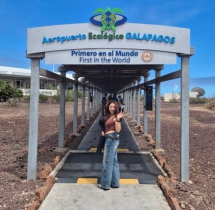
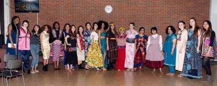
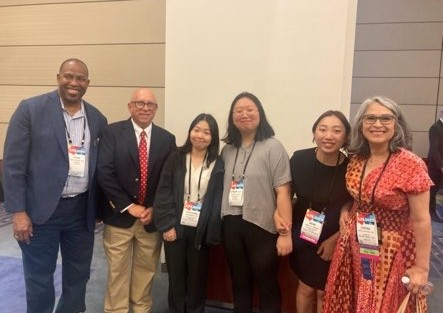
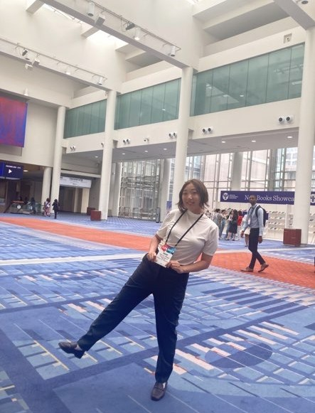
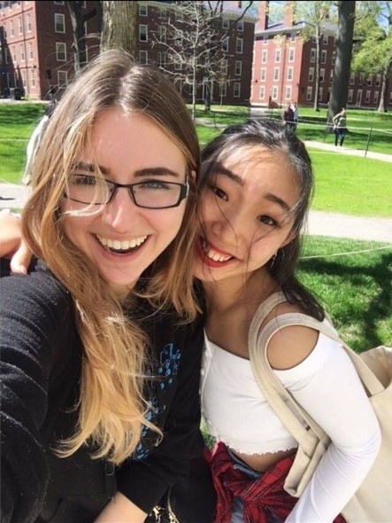
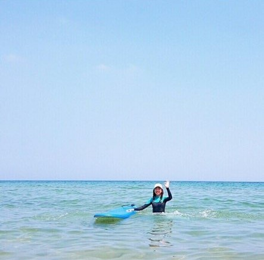
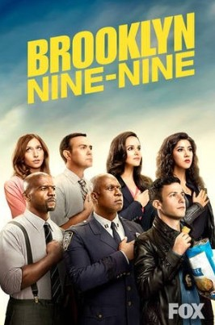
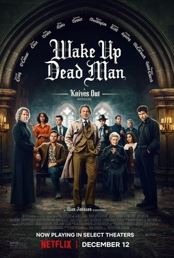
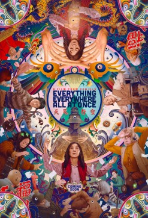

Islas Galápagos
Viajes
Me encanta viajar, conocer otras culturas, aprender idiomas y conectar con las personas. No me importa cruzar la ciudad por una buena comida: siempre agradezco las recomendaciones gastronómicas.









Creo que conversar es una de las mejores formas de comprender de verdad a otras personas, por eso disfruto hablando de casi cualquier tema, incluso de qué da sentido a la vida.
También disfruto de las conversaciones que cruzan disciplinas, desde la psicología y la filosofía hasta la ingeniería, la cultura y la tecnología. Creo que algunas de las soluciones más interesantes nacen de conexiones inesperadas entre distintos campos, y que siempre hay algo nuevo que aprender de las perspectivas ajenas.